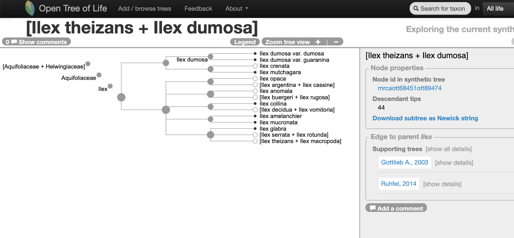
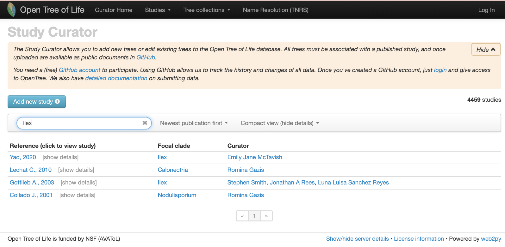

ilex-find-a-tree
ilex-find-a-tree.RmdI. Finding a tree to update
With the Open Tree of Life website
Go to the Open Tree of Life website and use the “search for taxon” menu to look up the taxon Ilex.
This is how the genus Ilex is represented on the Open Tree of Life synthetic tree at the middle of year 2020:
Go to the website and look at it here
Navigating into the tree, we notice that there might be two studies associated to this portion of the Open Tree synthetic tree.

Let’s verify that on the study curator of OToL.
Studies matching the word ‘ilex’ on the curator database, at the middle of year 2020. Some of these studies are not actually about the hollies, but other taxa that have the species epithet ilex, e.g., the holly oak Quercus ilex or the rodent Apodemus ilex

Finding a tree to update using the R package rotl
Explain what a focal clade is.
There is a handy function that will search a taxon among the focal clades reported across trees.
| study_ids | n_trees | tree_ids | candidate | study_year | title | study_doi |
|---|---|---|---|---|---|---|
| ot_1984 | 1 | tree1 | 2020 | http://dx.doi.org/10.1111/jse.12567 | ||
| pg_2827 | 2 | tree6576, tree6577 | tree6577 | 2003 | Molecular analyses of the genus Ilex (Aquifoliaceae) in southern South America, evidence from AFLP and ITS sequence data | http://dx.doi.org/10.3732/ajb.92.2.352 |
It seems like the oldest tree, tree6577 from study pg_2827, is in the Open Tree of Life synthetic tree.
Let’s get it and plot it here:
original_tree <- rotl::get_study_tree(study_id = "pg_2827", tree_id = "tree6577")
#> Warning in build_raw_phylo(ncl, missing_edge_length): missing edge lengths are
#> not allowed in phylo class. All removed.
ape::plot.phylo(ape::ladderize(original_tree), type = "phylogram", cex = 0.3, label.offset = 1, edge.width = 0.5)
Now, let’s look at some properties of the tree:
ape::Ntip(original_tree) # gets the number of tips
#> [1] 48
ape::is.rooted(original_tree) # check that it is rooted
#> [1] TRUE
ape::is.binary(original_tree) # check that it is fully resolved
#> [1] FALSE
datelife::phylo_has_brlen(original_tree) # checks that it has branch lengths
#> [1] FALSEThe tree has 48 tips, is rooted, has no branch lengths and is not fully resolved, as you probably already noted. Also, labels correspond to the labels reported on the original study here. Other labels are available to use as tip labels. For example, you can plot the tree using the unified taxonomic names, or the taxonomic ids.